충남대학교 컴퓨터공학과 김상하 교수님의 "컴퓨터 네트워크" 강의를 필기한 내용입니다.
다소 잘못된 내용과 구어적 표현 이 포함되어 있을 수 있습니다.
TCP Services
Process-to-Process Communication
- 일단 뭐 Process-to-Process Deilivery를 지원하기 위한 port number를 사용하니까 Client-Server Model을 사용한다
- TCP에서 사용하는 well know port는 80은 http, 53은 DNS라는것 정도는 알고 있어라
Stream Delivery Service
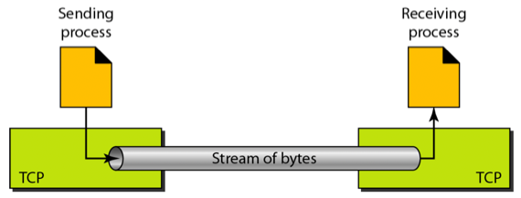
- 그리고 TCP에서는 Stream Delivery Service라는 것을 사용하는데 이게 뭐냐면
- UDP같은 경우에는 Application Layer로부터 내려온 데이터를 하나의 데이터그램으로 만들어서 보낸다
- 이걸 내용적으로 의미있는 단위로 데이터그램을 전송한다하고 표현함
- 하지만 TCP는 이렇게 하지 않고
- Application Layer로부터 내려온 데이터들을 버퍼에 모았다가 버퍼가 일정 수준 쌓이면 그때 보내게 된다
- 즉, UDP처럼 내용으로 구분해서 전송하는게 아니고
- 버퍼에 쌓인 데이터의 크기로 구분해서 보내게 되는 것
- 따라서 여러개의 데이터가 하나의 단위로 묶여서 보내질 수도 있고 Application Layer에서 내려온 데이터가 많은 경우에는 얘네들을 잘라서 보내기도 하고 이런식이더라
- 뭐 예를들어서 Application Layer에서 두 프로세스가 각각 5byte, 1500byte의 데이터를 줬다면
- UCP의 경우에는 5byte, 1500byte로 전송을 하겠지만
- TCP의 경우에는 1000byte, 505byte로 전송을 한다 이말임
- 이렇게 하는 것의 장점은 항상 비슷한 크기의 많은 데이터를 송수신하게 된다는 것이다
- 이게 왜 장점이 되냐면
- 데이터를 보낼때는 그것만 보내는게 아니고 여러 계층의 헤더를 붙여서 보내기 때문에 한번 보낼때 최대한 많은 데이터를 보내는게 효율적이기 때문
- 만일 Header를 다 합쳤을때 100바이트라면 UDP같은 경우에는 메시지가 5byte와 800byte두개가 들어오면 105byte, 900 byte 두번이 전송되지만
- TCP같은 경우에는 얘네들을 합쳐서 보내기 때문에 905byte 한번만 전송하게 된다
- 그리고 알아두어야할 게 Port별로 버퍼가 생성된다 - 어차피 Port들을 Multiplexing과 Demultiplexing을 다 하기 때문에 Port가 합쳐지는 것에 대한 생각은 하지 말고 Process-to-Process의 관점에서만 생각하면 된다
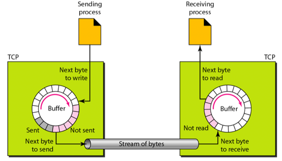
- 그리고 TCP는 Reliable한 전송을 보장하기 때문에 송수신 속도 차이에 따른 Flow error를 방지하고자 송수신측 모두 버퍼를 둔다
- 그래서 위 그림처럼 송수신측 모두 넉넉하게 버퍼를 준비해놓고 Sending process가 송신 버퍼에 쓰면 그걸 순차적으로 보내게 되고 받는쪽에서도 데이터를 받아 수신 버퍼에 쓰면 그걸 Receiving process가 가져가게 되는 구조
- 버퍼가 없다면 아직 보내지도 않았는데 Sending process가 데이터를 줘 Overwrite된다거나 수신측에서도 Receiving Process가 가져가지도 않았는데 데이터가 수신되어 Overwrite되는 일이 벌어지게 되는 것
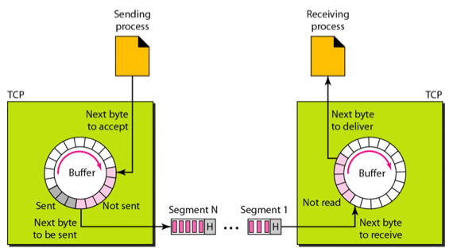
- 위 내용을 종합해보면 위와 같은 그림으로 표현할 수 있다
- 송수신 속도 차이에 따른 Flow error를 막기 위해 송수신 버퍼가 존재하고
- Message별로 데이터를 보내는게 아닌 일정 수준 크기로 데이터들을 뭉쳐 Segment라는 단위로 보내게 된다
Full-duplex Communication
- Full-duplex communication은 TCP가 양방향 통신을 지원한다는 의미이다
Connection Oriented Service
- 이전에 배운거처럼 TCP는 orderly delivery를 지원한다
- 그래서 일단 Connect Phase를 거치고 - 전송을 이제 시작할 것이니 송수신측 모두 버퍼를 준비해라 + 송신할 데이터에 numbering을 하여 순서대로 도착하지 않아도 수신측에서 number를 보고 정렬하여 상위계층으로 보낼 수 있도록
- 그리고 데이터를 송수신한 후 Disconnect Phase를 거쳐 준비한 버퍼를 삭제해 다른 통신에서도 사용할 수 있도록 함
Reliable Service
- TCP는 Reliable Communication을 지원한다 - Flow & Error Control을 하여 이러한 문제가 생기지 않도록 함
Numbering System of TCP
- 일단 TCP에서 Numbering 하는 데에 중요한 것은 번호가 Segment별로 붙는게 아니라는 점이다
- 이게 무슨말이냐면 위에서 TCP에서의 전송 단위가 Segment라고 했는데 첫번째 보내는 Segment는 0번, 두번째 보내는 Segment는 1번 이런식으로 숫자를 붙이지 않는다는 것 이다
- 그럼 뭐 어떻게 하느냐
- Byte 별로 번호를 붙이는 시스템을 이용한다
- 이걸 위해 두개의 필드가 헤더에 들어감 - Sequence Number하고 Acknowledge Number
- 얘네들은 Data link layer에서의 SEQ랑 ACK 번호랑 동일한 기능을 하는데 대신 번호를 매기는 단위가 Frame(Segment)가 아닌 바이트인 차이점이 있다
- 따라서 Sequence Number는 데이터의 첫번째 바이트에 붙는 번호이다
- 여기서 주의할 점은 Sequence Number는 0번부터 시작하지 않을 수도 있다는 점 - 0 ~ 2^31 - 1의 숫자 중 하나를 랜덤으로 골라 번호를 붙이게 된다
- 그리고 첫번째를 이렇게 붙이고 그 다음 바이트부터 1씩 증가하다가 2^31 - 1을 넘어가면 다시 0번으로 돌아와서 번호가 붙는 셈
- 당연히 Numbering이 이런식으로 된다는 거지 실제 Segment에는 첫번째 바이트의 Number인 Sequence number밖에 저장되지 않는다
- 그리고 Acknowledge Number는 Data link layer에서와 동일하게 이전까지는 잘 받았고 이제 이거를 보내달라는 의미가 된다
- 뒤에서 실제 예시를 보면 으케되는지 더 잘 알 수 있을거임
- 이런식으로 Byte-oriented Numbering System을 이용하기 때문에 Flow control과 Error control도 byte-oriented하게 이루어진다
- 뒤에 가서 어떻게 하는지 알려준댄다
Segment
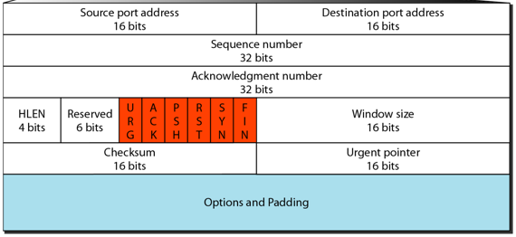
- 이게 Segment의 Header구조이다
- 위에서 언급 안한것만 살펴보면
- HLEN은 헤더의 크기이다 - 근데 이것도 IP헤더랑 비슷하게 4-byte단위로 표시함 - 즉, HLEN이 1이면 헤더가 4바이트라는 거고 HLEN의 최대 크기가 15이기 때문에 최대 헤더의 크기는 60byte인데 Option and Padding을 제외한 필수적인 부분이 20byte이기 때문에 Option and Padding부분은 40byte 이내로 상황에 맞게 들어가게 된다
- Reserved는 나중을 위해 비워둔 부분이고
- 주황색으로 표시된 Control이라고 불리는 Flag들은 Connection을 위해 있는 부분
- Window Size는 Flow Control을 위해 존재하는 부분
- Urgent Pointer는 뒤에서 배운댄다
- Checksum은 Error control을 위해 존재하는 부분이랜다
A TCP Connection
- Traffic이 막힌다던지 아니면 에러가 있어서 재전송을 하게 되는 등 전송의 순서가 바뀌게 되는 경우는 많다
- 그럼에도 불구하고 순서대로 데이터를 합치기 위해 Connection이 반드시 필요하게 됨
- Connect → Data Transfer → Disconnect 순서로 수행된다
Connection Establishment Phase - Three way handshake
- 일단 Connection단계에서는 Three way handshake라는 방식으로 Connection Establish를 하게 된다
- 이게뭐냐면
- 일단 Client가 통신하자고 Server에게 보내면 Server는 ㅇㅋ라고 하고 마지막으로 Client가 한번 더 확인차 ㅇㅋ라고 보내는 것
- 저렇게 세번 통신을 하여 Connection이 이루어지므로 Three way handshake인 것
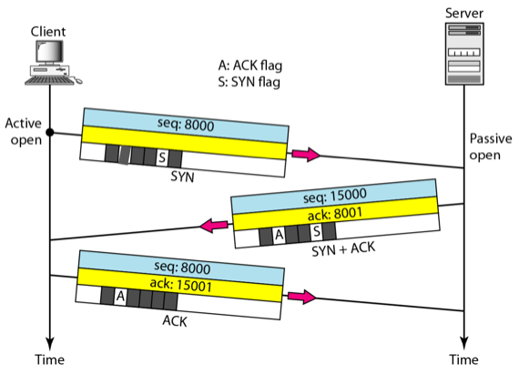
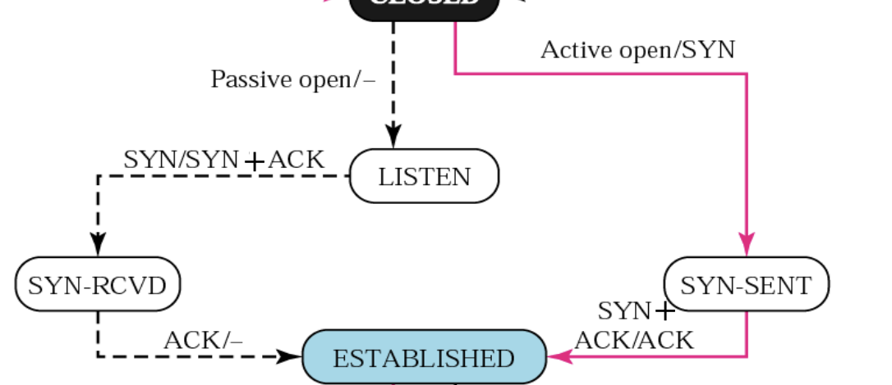
- 위 그림 두개를 같이 봐야 한다
- State Diagram을 볼 때는 점선 화살표가 Server, 실선 화살표가 Client인 것을 기억혀
- 그리고 edge에 붙어있는 라벨을 읽을 때 A/B이면 내가 지금 A를 했거나 A를 받은거고 그 다음에 B를 했다는 식으로 이해하면 됨
- 보면
- Client가 Active open을 하고 Server한테 첫번째 악수를 날린다
- Active open인 이유는 Client는 통신을 시작하는 주체이기 때문 - 적극적이다!
- 첫번째 악수를 날릴 때는 Control Flag의 SYN부분을 1로 만들어서 보낸다
- 그래서 저기 State Diagram에서 보면 Client는 Active open/SYN을 한 후에SYN-SENT상태에 진입하게 된다
- 그러면 Server는 Passive open을 하고 기다리다가 SYN을 받으면 Client에게 두번째 악수를 날린다
- Passive open인 이유는 당연히 Server는 Client가 통신을 시작해야만 시작할 수 있으므로 수동적으로 통신을 열게 되는 것임
- 그리고 두번째 악수를 날릴 때는 Control Flag의 SYN부분과 ACK부분을 1로 만들어서 보낸다
- 그래서 State Diagram에서도 Server는 일단 **Passive open/-**이므로 수동적 통신 개시를 한 후에 LISTEN상태에서 기다리고 있다가
- SYN/SYN + ACK을 한 후에 SYN-RCVD상태에 들어가게 된다
- 마지막으로 Client가 SYN + ACK를 받으면 세번째 악수를 날리며 Connection이 Establish된다
- 세번째 악수에서는 Client가 ACK하나만 올려서 보낸다
- 그럼 Server쪽에서는 ACK를 받았으므로 Connection establish를 하게 된다
- 그래서 Client쪽의 State Diagram을 보면 SYN + ACK/ACK을 하고 ESTABLISH상태로 가고
- Server쪽의 State Diagram을 봐도 **ACK/-**를 하고 ESTABLISH상태로 가게 된다
- 그리고 여기서 Sequence Number하고 Acknowledge Number를 좀 유심히 봐야 하는데
- 첫번째 악수에서는 Client가 8000번이라는 난수를 보냄 - 처음으로 보낼때는 SEQ 에 그냥 난수를 하나 보내게 된다
- 두번째 악수에서는 Server가 SEQ 15000에 ACK로 8001번을 보내는 것을 알 수 있다
- 15000은 당연히 처음 보내는 것이기 때문에 난수이고
- ACK가 8001이 되는 이유는 처음에 Client가 보낸 SEQ가 8000번이었으므로 이것을 잘 받았고 8001번을 나는 원한다는 뜻이 되는 거임
- 즉, ACK로 n을 받았으면 n - 1까지는 잘 받았고 이제 n을 보내주세요 라는 의미로 이해하면 된다
- 그리고 세번째 악수를 보면 Client가 여전히 8000을 보내고 ACK는 15001을 보낸다
- 뭐 ACK가 15001인 이유는 Server가 SEQ15000를 보냈기 때문이고
- SEQ가 8000인 이유는 데이터를 보내기 위한 Segment가 아니기 때문이다
- 즉, 상대방의 ACK에 부응하여 그에 맞는 데이터를 보낼때는 상대방이 준 ACK를 SEQ에 넣어 데이터도 그에 맞는 것을 주지만 상대방에게 데이터를 보내는게 아닐때에는 SEQ로 ACK - 1을 주게 되는거 같음
- 그리고 ACK도 그냥 기계적으로 생각하면 편하다 - 상대방이 준 Segment를 잘 받았으면 그냥 그 다음거를 받기 원하는 거임
- 그리고 Control Flag에 대해서도 좀 정리를 해보면 SYN은 Connection을 하자는 의미인 거고 ACK는 방금 보낸 것을 잘 받았다는 의미인거다
- 따라서 첫번째 악수에는 Connection을 할건데 이전에 상대방이 보낸 것은 없으니까 SYN하나만 올라가있게 되는 것이고
- 두번째 악수는 Connection을 할거고 이전에 보낸 것을 잘 받았으니까 SYN과 ACK다 올라가 있는 것이다
- 그리고 세번째 악수는 Connection하자는 답변을 받았으므로 굳이 SYN을 올리지 않고 그냥 방금 니가 보낸거 잘 받았소 의 느낌으로 ACK하나만 올리게 되는 것
Data Transfer
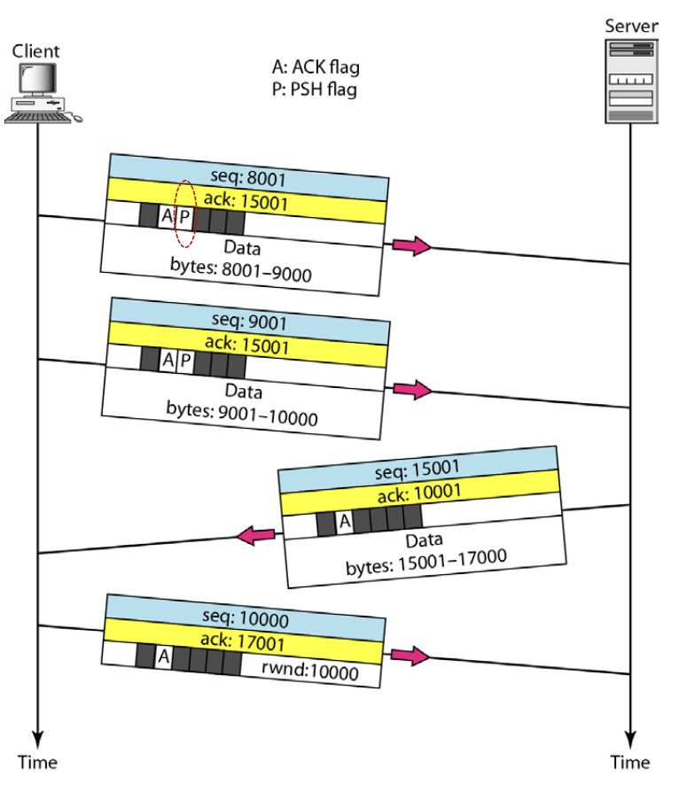
- 위의 예시에서 먼저 SEQ와 ACK를 보면
- 이제 데이터를 보낼꺼니까 상대방이 준 ACK를 반영해 SEQ에 8001을 넣어 데이터를 보내게 된다
- 그리고 방금 상대방이 준 것을 잘 받았고 이제 이걸 원한다는 의미로 ACK를 15001로 설정하는 것
- 여기서 데이터를 보내는데 ACK도 같이 보내는 이유는 TCP는 Full-duplex communication을 지원하므로 이런식으로 piggybacking을 할 수 있다는 것을 보여주기 위한 것 이다
- 즉, 데이터를 보냄과 동시에 ACK도 같이 보내 상대방도 ACK에 맞는 데이터를 보낼 수 있고 이런식으로 양방향 통신이 이루어지는 셈 - 이게 piggybacking인데 기억나시쥬?
- 위의 통신에서 두세번째를 보면 알 수 있다 - 두번째에서 방금 9000번까지 보냈으니까 이제 입벌려9001들어간다 느낌으로 SEQ 9001을 설정하고, 데이터와 함께 ACK 15001을 보내면
- 세번째에서 상대방은 그에 맞게 SEQ를 15001로 하여 자신도 데이터를 보내고 두번째에서 줬던 데이터를 잘 받았고 이제 10001을 원한다는 의미로 ACK를 같이 보내게 되는 것
- 마지막으로 네번째에서는 더 이상 보낼게 없으니까 SEQ는 그냥 마지막에 보낸 10000으로 하고 방금 보낸 데이터 잘 받았고 이제 17001을 원하고 있다는 것을 피력하기 위해 ACK를 17001로 설정해서 보내게 되는 것
- 그리고 Control Flag부분을 보면
- 상대방이 보낸 것에 대한 ACK가 Segment에 포함되어 있으므로 ACK FLAG를 올리게 된다
- 그리고 중요한게 저 PSH FLAG인데 이건 뭐냐면
- TCP는 기본적으로 버퍼링을 해 버퍼에 일정수준의 바이트가 차기 전까지는 보내지 않고 받는쪽에서도 동일하게 어느정도 모이기 전까지는 Application layer로 올리지 않는다
- 받는쪽에서도 이렇게 기다리는 이유는 일단 Segment를 다 받고 정렬을 해서 올리기 위해서이기도 하고, 만일 데이터를 받을 Application이 바빠 지금 당장은 받지 못하는 경우에도 이렇게 기다렸다가 올리기 위해서이다
- 하지만 PSH FLAG가 올라가 있으면 기다리지 말고 바로 Application 으로 올리라는 의미를 가진다
- 보통 이것을 설정하는 것은 예를들어 채팅어플같은 실시간 통신이 중요할 때에는 기다리는 것이 곧 지연이기 때문에 이것을 막기 위해 바로 올려보내주세요 라고 하는 것이다
- 따라서 위의 예시에서는 첫 두 Segment에 PSH가 설정되어있으므로 쟤네들은 바로 Application으로 올라가게 된다 - 만약 이게 설정되어있지 않았더라면 첫번째는 버퍼에서 기다리고 두번째가 도착했을때 수신자의 판단 하에 Application으로 올릴 수 있는 것이다
- 위의 예시에서는 없지만 URG FLAG는 Urgent 즉, 긴급상황이 벌어진 것이다
- 이건 어떤 경우에 설정되냐면
- 예를들어서 큰 파일을 보내던 와중에 파일을 잘못보낸 것을 알고 이것을 취소하고자 할 때 사용한다
- 이런 상황이 생기면 TCP에서는 Special TCP Segment를 만들어 URG FLAG를 올리고 URG POINTER를 설정하여 데이터와 함께 보내게 된다
- URG POINTER가 뭐냐면 위에 Segment Header구조 볼때 있던 필드인데 여기에 들어있는 값이 정상적인 데이터와 비정상적인 데이터를 구분하는 바이트 번호인 셈
- 즉, URG POINTER가 400이라고 되어 있으면 Segment의 데이터에서 400번째 바이트까지는 폐기해야되는 비정상적인 데이터이고, 그 이후에 나오는 바이트들은 정상적으로 수신해야 되는 데이터인 것
- 그래서 URG를 수신하게 되면 URG POINTER가 가르키는 곳까지 수신자는 폐기하게 된다
- 이렇게 하는 이유는 한번에 최대한 많은 데이터를 보내기 위함이다 - 문제가 생겼다고 문제가 있음을 알리는 Segment를 별도로 보내는게 아니고 문제가 있음을 알리면서 동시에 정상적인 데이터들도 보내고 싶으신거지
Connection Termination - Four-way Handshake(Half close)
- Connection termination에서도 Establishment에서처럼 Three-way handshake로 할 수 있지만 요즘은 사용되지 않는댄다
- 그래서 요즘 사용하고 있는 방법은 Four-way Handshake(Half close) 라는 방법이다
- 그리고 위에서 언급한것처럼 Connection Termination단계에서 버퍼들을 반납하게 됨
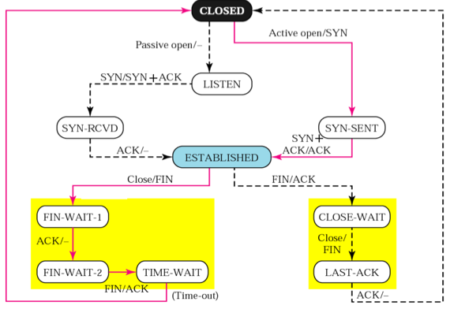
- 위 그림이 통신 전반에 걸친 State Diagram인데 Established까지는 전부 배웠고 이제 그 아랫부분을 보면 된다
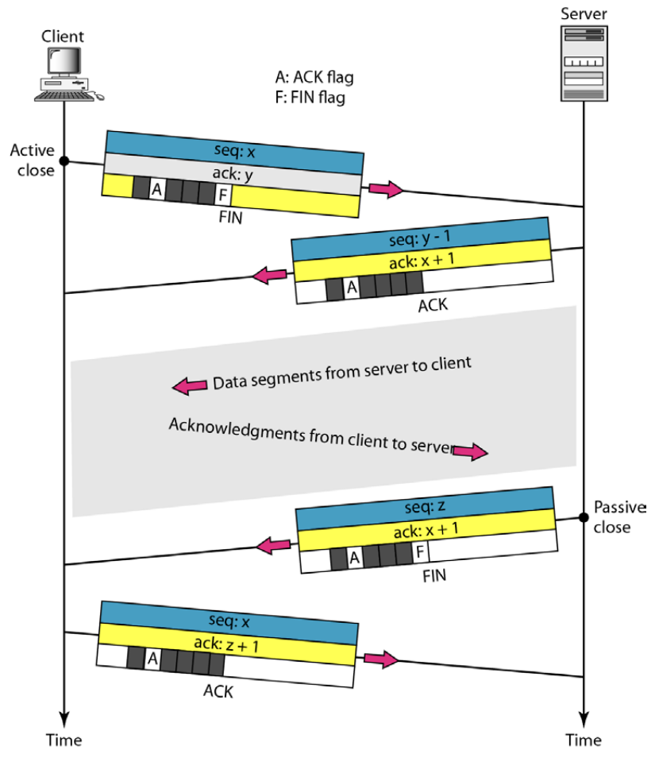
- 위와 같은 식으로 이루어짐
- Client가 Active close를 하고 FIN FLAG을 올려서 Segment를 보냄
- Establish때와 마찬가지로 항상 Client가 먼저 제안을 한다
- 뭐 FIN FLAG는 이름 그대로 이제 통신 그만하자 라는 뜻이다
- State Diagram에서 봐도 Close를 하고 FIN을 보낸 뒤 FIN-WAIT-1상태로 들어간 것을 볼 수 있다
- Server는 FIN을 받으면 알겠다고 ACK를 보내게 된다
- State Diagram에서 보면 FIN을 받고 ACK를 날린 뒤 CLOSE-WAIT상태로 들어가게 된다
- Client는 ACK를 받으면 아무것도 하지 않는다
- State Diagram에서 보면 ACK를 받고 FIN-WAIT-2상태로 진입한걸 볼 수 있는데
- 이 단계가 뭐하는 거냐면 Client쪽은 데이터를 다 보냈어도 Server쪽은 Client가 요청한 데이터를 아직 덜 보냈을 수도 있기 때문에 Server가 마무리하는 단계가 되는 것이다
- 따라서 Client가 FIN-WAIT-2상태일때 Server는 못보낸 것들을 다 보내고 Client는 ACK를 날려 잘 받았다고 알려줌
- Server는 마무리를 다 한 후에 FIN을 보낸다
- State Diagram에서 보면 Close/FIN이라고 되어 있는데 이게 Close하는 동안 나머지 데이터를 전부 보내고 그 이후에 FIN을 보낸다는 것
- FIN을 보내고 난 후에는 LAST-ACK상태로 들어가 ACK가 올때까지 기다린다
- Client는 FIN을 받으면 ACK를 날리고 잠시 대기한다
- State Diagram에서 보면 FIN/ACK후에 TIME-WAIT를 하는 것을 볼 수 있음
- Server는 ACK를 받고 바로 Close로 들어간다
- 뭐 이제는 State diagram 설명안해도 되겠지
- Client는 일정시간 기다린 후에 Close로 들어간다
- Server는 바로 Close되는데 Client는 왜 일정시간 기다리는지 궁금하다면 대학원응안가
Flow Control
Window Size
- 일단 TCP의 Flow Control에서 중요한 점은 Receiver의 요청에 의해 Sender의 버퍼 크기를 늘렸다 줄였다 한다는 것이다
- 이게 뭔소리냐면
- 만일 Receiver의 버퍼 용량이 5000이고 1000이 아직 Application으로 올라가지 못했다고 해보면
- Receiver는 4000이상의 데이터를 받게 되면 버퍼가 터져나가게 된다
- 따라서 Receiver가 Sender한테 말하는 거임 - 4000이상 보내지 마라고
- 이때 Receiver가 사용할 수 있는 남은 버퍼의 크기를 rwnd라고 표현한다
- 또한 이러한 이유 말고도 다음 강의때 배울 cwnd라는 것도 있는데
- 이건 Congestion Window라고 네트워크의 혼잡도를 나타내는 것이다 - 네트워크가 혼잡하면 한번에 보내는 데이터의 양을 줄이라고 Sender에게 요청하는 것
- 이러한 일을 Segment Header에 있던 Window Size필드를 이용해 수행한다
- Window Size필드의 값은 rwnd와 cwnd중 작은 값 으로 설정하여 Receiver가 Sender에게 요청하게 되는 것 - 두 값보다도 적은 사이즈로 보내야 정상적으로 수신할 수 있으므로
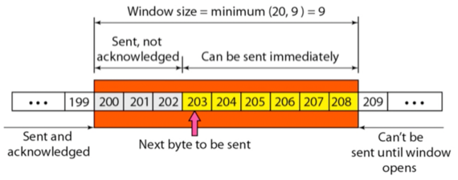
- 따라서 Sender의 버퍼를 보면 위와 같은 모양이 될 수 있다
- 일단 Window Size는 Receiver의 요청에 의해 9로 설정된 상태고
- 199까지는 전송했고 ACK까지 받은 애등
- 200~202까지는 전송했지만 ACK는 받지 못한 애들
- 그리고 203~208이 바로 전송할 수 있는 애들
- 209이후로는 Application한테 받았지만 Window size 제한때문에 보낼 수 없는 애들인 것이다
- 즉 위 그림에서 보이는것처럼 Window size가 정해져도 ACK를 받지 못한놈들 때문에 당장 보낼 수 있는 크기는 그것보다 작을 수도 있다는 것
ARQ
- Flow Control이기 때문에 Data link layer에서의 Flow Control 방법을 사용하는데
- Go-back-N ARQ가 아니라 Selective ARQ를 사용한댄다
- 기억안나면 06. ARQ Protocol, HDLC
Error Control
- Segment Header의 Checksum 이라는 필드를 이용해 Error detection을 함
- 그리고 수신측에서는 정상적으로 도착하면 ACK를 보내고 정상이 아니라면 아무것도 보내지 않는다 - 따라서 송신측에서는 ACK가 오지 않으면 Retransmission을 하게 됨
- 여기에는 두 가지 용어가 등장한다
- RTO(Retransmission Time Out) 이라는 것은 말 그대로 일정 시간이 지나도 ACK가 오지 않는 것을 의미하고
- RTT(Round Trip Time) 이라는 것은 송신측이 시간을 잴 때 고정된 시간이 지나면 Retransmission을 하는 것이 아니고 Segment 왕복시간을 평균내서 해당 시간보다 늦어지면 Retransmission을 하게 되는 것을 말한다
- 즉, 늦는다고 무조건 보내는게 아니고 Traffic에 의한 지연일 수도 있으니까 왕복시간을 고려해 타임아웃을 거는 구조다 이거지
- 그리고 Three Duplicate ACK Segment가 와도 Retransmission을 하게 된다
- 이게 뭔지는 뒤에 나올거임
- 중요한 것은 Selective ARQ이기 때문에 순서에 맞지 않게 나중꺼가 먼저 도착해도 그걸 버리지 않는다 - out-of-order라는 플래그를 달아서 보류해뒀다가 빠진 Segment가 도착하면 그때 정렬을 해서 Application으로 올려보내는 구조
Normal Operation
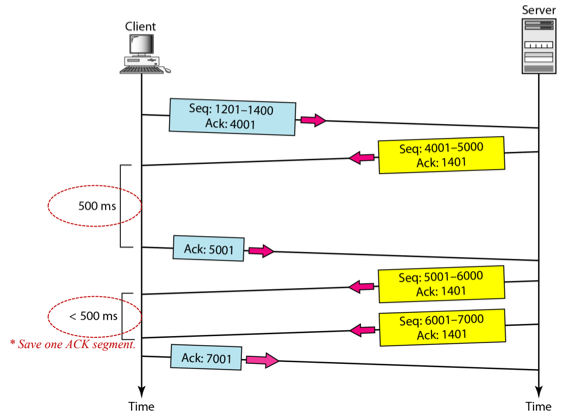
- 이건 뭐 정상적인 경우인데
- 중요한점은 여러번의 수신을 하나의 ACK로 퉁칠수 있다는 것이다
- 위의 예제에서 보면 5001
6001을 보내고 60017001을 보낸 후에 ACK로 7001을 보내게 되면 6001에 대한 ACK가 없으므로 이게 누락됐다고 생각하는게 아니고 7000까지는 잘 받았다고 생각하게 되는 것
RTT Operation
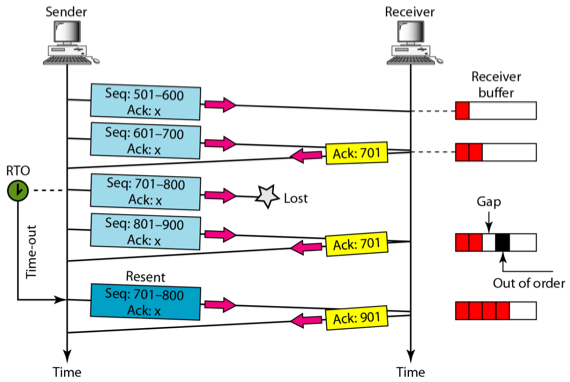
- 여기서 보면
- 701~800을 보내고 801~900을 보냈을 때 수신측은 701~800이 누락되었으므로 ACK 701를 한번 더 보내게 된다
- 근데 여기서 중요한점은 위에서 말한것처럼 Out of Order를 버리지 않는다는 것이다
- 위의 예제에서 보면 801~901까지는 정상적으로 왔는데 앞에꺼가 안왔다고 이것을 버리는게 아니라 Out of Order마킹해놓고 보류해놓은 뒤 701이 안왔다고 ACK 701을 보내게 되는 것
- 송신측에서는 ACK 901을 기대하고있었는데 ACK 701이 오기도 했고
- 보낸 701~800이 타임아웃이 났기 때문에 701~800을 다시 보내게 됨
- 그럼 수신측에 도착하면 다 잘 받았다는 뜻으로 ACK 901을 주게 된다 - 701~800이 잘 도착했으므로 801~900을 Out of Order를 풀고 나머지를 이어 받거나 Application으로 올리던가 하게 됨
Three Duplicate ACK - Fast Retransmission
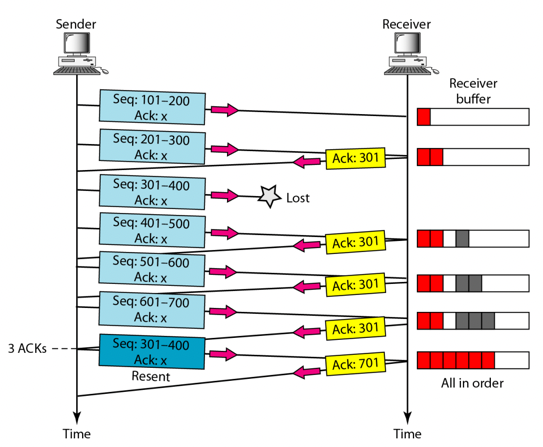
- 말 그대로 동일한 ACK가 세번이나 들어왔을 때 재전송하는 것을 의미한다
- RTT가 끝나기 전에 ACK가 세번이 들어오면 걔도 뭔가 문제가 있다고 판단하고 재전송을 하게 됨
- 위의 예제에서도 Out of Order를 버리지 않는다는 것이 나타난다 - 뒤에놈이 먼저 들어오면 Out of Order로 빼서 보류해두고 안들어온 301에 대해 ACK를 날리게 됨 - 이게 세번 중첩되면 재전송을 하고 재전송 성공하면 전부 다 들어왔음을 알리기 위해 ACK 701을 보내게 되는 것
- 근데 IP에서의 Packet Switching은 Datagram을 사용하기 때문에 누락된게 아니라 경로를 잘못 들어 좀 오래 걸리는 것일 수도 있음
- 근데도 동일한 ACK가 세번이나 들어오면 문제가 발생했다고 판단하긴 한다
- 이러한 이유때문에 Three duplicate ACK를 Weak Error라고 부른댄다 - 확실하지는 않은 오류라 이거지
- 반면에 RTT의 경우는 누락된 것이 확실하기 때문에 Strong Error라고 한댄다